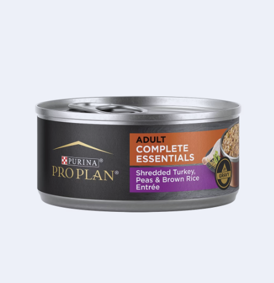
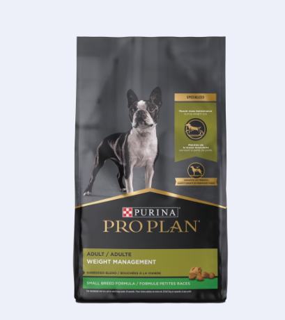
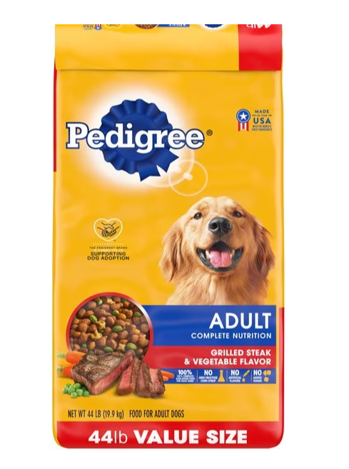
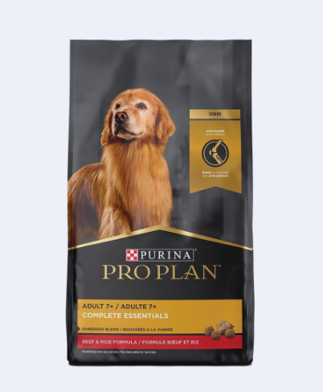
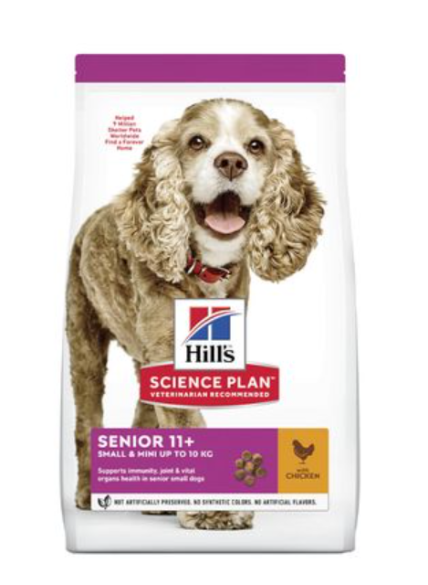
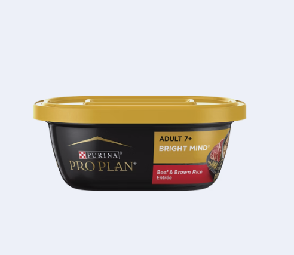

Dog & Puppy Feeding
Your Dog’s Necessary Nutrients
Before you decide among commercial, home-cooked, and raw food for your dog, it's important to have a basic understanding of the building blocks of a healthy canine diet.
Water. Your dog should always have access to fresh water, from a clean bowl. Some people limit a dog's water supply or take it away altogether in the evenings, to avoid late-night bathroom needs. This may be a helpful house-training tool, but it is not fair or healthy for your dog in the long-term.
Proteins. Proteins build and maintain muscles, organs, bones, blood, body tissues, hair, nails, and the immune system. Many foods contain protein, but the best sources are beef, poultry, fish, eggs, dairy products, grains, and soy.
Fats. Fats are the main source of dietary energy (or calories) in a dog's diet and provide the most concentrated source of energy in foods. One gram of fat contains more than twice the energy than one gram of protein or carbohydrate. They are needed for healthy skin, coat, eyes, brain, and other tissues.
Carbohydrates. Along with proteins and fats, carbohydrates are one of the three major nutrients in food and a major source of energy for a dog's body.
Dog & Puppy Feeding
Your Dog’s Necessary Nutrients
Before you decide among commercial, home-cooked, and raw food for your dog, it's important to have a basic understanding of the building blocks of a healthy canine diet.
Water. Your dog should always have access to fresh water, from a clean bowl. Some people limit a dog's water supply or take it away altogether in the evenings, to avoid late-night bathroom needs. This may be a helpful house-training tool, but it is not fair or healthy for your dog in the long-term.
Proteins. Proteins build and maintain muscles, organs, bones, blood, body tissues, hair, nails, and the immune system. Many foods contain protein, but the best sources are beef, poultry, fish, eggs, dairy products, grains, and soy.
Fats. Fats are the main source of dietary energy (or calories) in a dog's diet and provide the most concentrated source of energy in foods. One gram of fat contains more than twice the energy than one gram of protein or carbohydrate. They are needed for healthy skin, coat, eyes, brain, and other tissues.
Carbohydrates. Along with proteins and fats, carbohydrates are one of the three major nutrients in food and a major source of energy for a dog's body.
Dog Feeding Chart: How Much Should I Feed My Dog?
Several factors can impact not only how much food to feed your dog, but also what type of food he needs.
- Weight : Maintaining an ideal body condition is important for your dog’s overall health. “If your dog is not his ideal body condition, you may need to make adjustments in what and how much you are feeding him,” says Dr. Callie Harris, DVM. We also recommend working with your veterinarian to rule out any health concerns.
- Activity Levels: The feeding recommendations on dog food packages are based on average adult dogs with normal activity levels. If your dog gets a lot of daily exercise by going on daily runs or hikes with you, he may need more calories to meet his energy needs. “Dogs who are less active and overweight may need a more managed daily caloric intake,” according to Dr. Harris.
- Age: As your dog grows, his nutritional needs change. If your dog is still a puppy, he needs a puppy food for growth and development. Seniors may benefit from senior formulas that help keep older dogs active and their minds sharp. Work with your veterinarian to determine the type of food your dog needs based on his life stage and life style.
What Are Dog Feeding Charts?
Dog feeding charts are required on dog food packaging. The layout of the chart, however, can vary from brand to brand.
.Here’s a sample dog feeding chart similar to the one you will find on any dry dog food packaging:
| Adult Dog Size (lbs) | Dry Food Feeding Amount (Cups) |
|---|---|
| 3 to 12 | 1/3 to 1 |
| 13 to 20 | 1 to 1/3 |
| 21 to 35 | 1-1/3 to 2 |
| 26 to 50 | 2 to 2-2/3 |
| 51 to 75 | 2-2/3 to 3-1/3 |
| 76 to 100 | 3-1/3 to 4-1/4 |
| 100+ | 4-1/4 plus 1/4 cup for each 10 lbs of body weight over 100 lbs |
Note: Dog feeding amounts vary from product to product based on calorie content and formula. Consult the feeding chart on the back of your dog’s food packaging. Individual needs can vary, so consult your veterinarian regarding special dietary needs.
Here is a more detailed pet guide for how much food is right for your pet: Go to Purina Pet Food Feeding Guide
How Often Should I Feed My Dog?
Set mealtimes are recommended for most dogs for a variety of reasons. Keeping mealtimes consistent, as well as the type and amount of food you feed him, will help him maintain both his digestive health and his weight. Consistent mealtimes can also help prevent accidents in the house.
For most dogs, feeding twice each day—once in the morning and once in the evening—is appropriate.
FAQs about feeding your dog
Is it Bad for Adult Dogs to Continue Eating Puppy Food?
Because puppy foods are formulated to deliver higher amounts of protein and fat, along with other nutrients needed for a puppy’s rapid initial growth, feeding puppy food regularly to a healthy adult can cause unwanted weight gain, among other health problems. Can older dogs eat puppy food? While puppy food is generally safe for adult dogs, it may not be ideal or provide optimal nutrition for older life stages.
Can Senior Dogs Eat Puppy Food?
In rare cases a veterinarian may recommend a higher calorie puppy food for a senior dog who is underweight or becoming picky about eating. Unless your veterinarian has recommended this for your senior dog, your best option is a diet formulated for adult maintenance or a senior dog food.
When to Take Your Dog Off of Puppy Food
A puppy is ready to transition from puppy food to adult dog food once they have reached skeletal maturity. While the conventional wisdom is that this transition point happens at one year of age, the actual point can vary depending on your dog’s breed and size.
Medium-size m breed dogs are typically considered adult dogs at one year of age. Toy and small breeds may reach maturity slightly earlier. Large and giant breed dogs, however, can take longer to reach adulthood, and may continue to grow until two years of age.
When Should I Transition to Adult Dog Food?
A general rule to follow is that you can switch your puppy to adult dog food once they have finished growing. As your puppy approaches adulthood, they will no longer need the high-calorie puppy food to support their development and are now in a maintenance phase. Proactively changing their food when growth is completed rather than waiting until your dog displays weight gain will help them make a healthy transition to adulthood.
When you and your vet decide to switch to adult dog food, plan on slowly making the change over the course of 7 to 10 days by gradually increasing the ratio of adult dog food in your puppy's diet. If not, your puppy may experience loose stool as a result.
When Should My Dog Start Eating Senior Dog Food?
If your dog is already between the ages of 6 and 10, they may now be considered a senior. In general, larger breeds tend to mature earlier than smaller breeds, becoming a little grayer around the muzzle or stiffer than they were in their youthful years. Since they're now a "senior," it’s probably a good time to switch to senior dog food, right? Maybe, but maybe not.
However, some veterinarians may recommend switching your senior dog to a prescription diet. These diets are formulated with supplements to aid in age-related conditions, such as arthritis, joint problems, and weight loss. As these foods are tailored to special dietary needs, they may not follow the guidelines of the AAFCO. Only add supplements under your vet’s guidance, as supplements don’t have the same safety regulations as food and medication, meaning their effectiveness and safety may pose a risk.
Can a Puppy Eat Adult Food?
If you already own a dog and just added a new puppy to your pack, it may seem practical to feed your new addition the same food that your adult dog already eats. However, even though your puppy may chow down with no apparent issues, your puppy is not eating the diet that fits their needs. For example, would you feed a newborn baby a plate of spaghetti and meatballs for dinner? Let’s hope not. Just like human babies, puppies need appropriate food for their small stature.
Your puppy has a small body, but needs big calories to support growth and development. So, while it may be tempting to let them chow away at anything they want since they're growing, it's important to make sure each mouthful provides the correct amount of protein and calories without overwhelming their little bodies. In addition, many small breed puppies require extra small food or else their tiny teeth will have trouble chewing.
When to Take Your Dog Off of Puppy Food
A puppy is ready to transition from puppy food to adult dog food once they have reached skeletal maturity. While the conventional wisdom is that this transition point happens at one year of age, the actual point can vary depending on your dog’s breed and size.
Medium-size m breed dogs are typically considered adult dogs at one year of age. Toy and small breeds may reach maturity slightly earlier. Large and giant breed dogs, however, can take longer to reach adulthood, and may continue to grow until two years of age.
The Difference Between Puppy, Adult and Senior Dog Food
Dogs have different nutritional needs at different stages of life. So, their diets need to change to accommodate those needs. The advantage of life stage nutrition is that the foods are formulated to provide complete and balanced nutrition for dogs at specific stages of life.
-
Puppy Food
Since puppies’ bodies are doing more (a lot more) at this stage, they need a diet formulated for puppies that gives them more of certain nutrients than they will need as adults. For example, the American Association of Feed Control Officials (AAFCO) recommends puppies consume about 1.2 x more protein on a caloric basis than adult dogs. Puppies also need more fat in their diets. AAFCO recommends puppies consume 1.5 x more fat on a caloric basis than adult dogs.
Adult Dog Food
While the goal of a quality puppy food is to fuel healthy growth, the role of a complete and balanced adult dog food is to help dogs maintain optimal overall body condition and health during their adult years.
Here are some recommended dog food options for adult dogs that are formulated to meet their nutritional needs for maintaining optimal health and vitality:
Pro Plan Complete Essentials Adult Shredded Turkey, Peas & Brown Rice Entrée in Gravy Wet Dog Food
Cick here to buyPro Plan Weight Management Small Breed Dry Dog Food
Cick here to buyPedigree Complete Nutrition Grilled Steak & Vegetable Flavor Dog Kibble Adult Dry Dog Food
Cick here to buy-
Senior Dog Food
As dogs reach their senior years (age 7 or older, depending on breed), they may become less active, and their bodies may start to show signs of age. A dog food complete and balanced for senior dogs will provide nutritional support tailored to help their bodies maintain lean muscle mass, a healthy weight, joint health and mobility, and more.
Pro Plan Complete Essentials Adult 7+ Beef & Rice Dry Dog Food
Cick here to buyHill's Science Plan Senior 11+ Small & Mini Chicken
Cick here to buyPro Plan BRIGHT MIND Adult 7+ Beef & Brown Rice Entrée Wet Dog Food
Cick here to buy
Here are some recommended puppy food options that provide the essential nutrients for healthy growth and development:
Royal Canin Mini Puppy
Cick here to buyPro Plan Sport Development Formula Dry Puppy Food
Cick here to buyRoyal Canin Mini Puppy in Gravy
Cick here to buyDry Dog Food vs. Wet Dog Food: Which Is Better?
When choosing between dry and wet dog food, it's important to consider your dog’s health, dietary needs, and your lifestyle. Both forms have their pros and cons.
| Wet Food | Dry Food | |
|---|---|---|
| Advantages |
- Increased palatability - Provides additional hydration - Easier to chew, suitable for puppies, seniors, and dogs with dental issues |
- Cost-effective - Convenient storage and longer shelf life - Helps in maintaining dental health by reducing plaque |
| Disadvantages |
- More expensive - Requires refrigeration after opening and should be used quickly - Lower calorie content per gram, requiring more food to meet caloric needs |
- Lower palatability for some dogs - Less hydrating, requires ensuring adequate water intake - Some dogs may find it harder to chew |
In conclusion, while there are various options and considerations when it comes to feeding puppies, the most important step is consulting with a veterinarian. A professional can provide personalized advice based on your puppy’s specific health needs, breed, and growth requirements.
Remember, each puppy is unique, and what works for one may not work for another. Therefore, it is crucial to make informed decisions about their diet by seeking guidance from a veterinarian. This ensures that your puppy receives the optimal nutrition necessary for a healthy and happy development.

Purina Pet food finder
This handy tool finds the best food for your pet from Purina.

Royal Canin food finder
Find the perfect diet for your pet in just a few clicks
Dogs Available for Adoption >
300+ pets available on Pawppies
MEET THEM
{{ animal.name }}
{{ animal.age }}, {{ animal.breedDetails.name }}